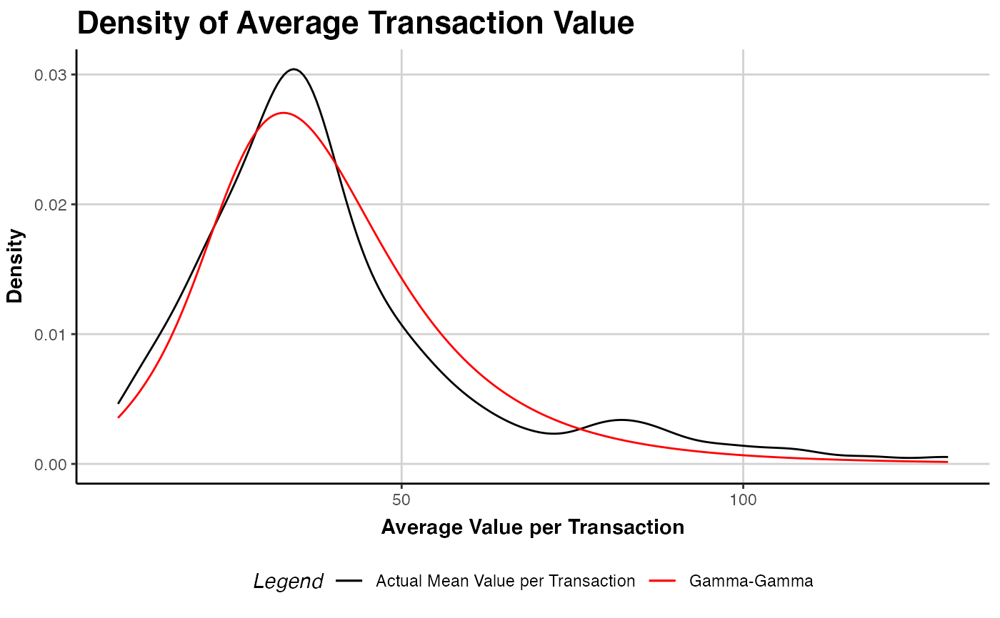

Fits the Gamma-Gamma model on a given object of class clv.data to predict customers' mean
spending per transaction.
The data object on which the model is fitted.
Named start parameters containing the optimization start parameters for the model without covariates.
Whether customer's first transaction are removed. If TRUE all zero-repeaters are excluded from model fitting.
Additional arguments to control the optimization which are forwarded to optimx::optimx.
If multiple optimization methods are specified, only the result of the last method is further processed.
Show details about the running of the function.
Ignored
An object of class clv.gg is returned.
The function summary can be used to obtain and print a summary of the results.
The generic accessor functions coefficients, vcov, fitted,
logLik, AIC, BIC, and nobs are available.
Model parameters for the G/G model are p, q, and gamma. p: shape parameter of the Gamma distribution of the spending process. q: shape parameter of the Gamma distribution to account for customer heterogeneity. gamma: scale parameter of the Gamma distribution to account for customer heterogeneity.
If no start parameters are given, p=0.5, q=15, gamma=2 is used for all model parameters. All parameters are required
to be > 0.
The Gamma-Gamma model cannot be estimated for data that contains negative prices. Customers with a mean spending of zero or a transaction count of zero are ignored during model fitting.
Colombo R, Jiang W (1999). “A stochastic RFM model.” Journal of Interactive Marketing, 13(3), 2-12.
Fader PS, Hardie BG, Lee K (2005). “RFM and CLV: Using Iso-Value Curves for Customer Base Analysis.” Journal of Marketing Research, 42(4), 415-430.
Fader PS, Hardie BG (2013). “The Gamma-Gamma Model of Monetary Value.” URL http://www.brucehardie.com/notes/025/gamma_gamma.pdf.
# \donttest{
data("apparelTrans")
clv.data.apparel <- clvdata(apparelTrans, date.format = "ymd",
time.unit = "w", estimation.split = 52)
# Fit the gg model
gg(clv.data.apparel)
#> Starting estimation...
#> Estimation finished!
#> Gamma-Gamma Model
#>
#> Call:
#> gg(clv.data = clv.data.apparel)
#>
#> Coefficients:
#> p q gamma
#> 4.090 4.162 28.705
#> KKT1: TRUE
#> KKT2: TRUE
# Give initial guesses for the model parameters
gg(clv.data.apparel,
start.params.model = c(p=0.5, q=15, gamma=2))
#> Starting estimation...
#> Estimation finished!
#> Gamma-Gamma Model
#>
#> Call:
#> gg(clv.data = clv.data.apparel, start.params.model = c(p = 0.5,
#> q = 15, gamma = 2))
#>
#> Coefficients:
#> p q gamma
#> 4.090 4.163 28.707
#> KKT1: TRUE
#> KKT2: TRUE
# pass additional parameters to the optimizer (optimx)
# Use Nelder-Mead as optimization method and print
# detailed information about the optimization process
apparel.gg <- gg(clv.data.apparel,
optimx.args = list(method="Nelder-Mead",
control=list(trace=6)))
#> Starting estimation...
#> fn is fn1
#> Looking for method = Nelder-Mead
#> Methods to be used:[1] "Nelder-Mead"
#> optcfg:$fname
#> [1] "fn1"
#>
#> $npar
#> [1] 3
#>
#> $ctrl
#> $ctrl$follow.on
#> [1] FALSE
#>
#> $ctrl$save.failures
#> [1] TRUE
#>
#> $ctrl$trace
#> [1] 6
#>
#> $ctrl$kkt
#> [1] TRUE
#>
#> $ctrl$all.methods
#> [1] FALSE
#>
#> $ctrl$starttests
#> [1] FALSE
#>
#> $ctrl$maximize
#> [1] FALSE
#>
#> $ctrl$dowarn
#> [1] TRUE
#>
#> $ctrl$usenumDeriv
#> [1] FALSE
#>
#> $ctrl$kkttol
#> [1] 0.001
#>
#> $ctrl$kkt2tol
#> [1] 1e-06
#>
#> $ctrl$badval
#> [1] 8.988466e+307
#>
#> $ctrl$scaletol
#> [1] 3
#>
#> $ctrl$have.bounds
#> [1] FALSE
#>
#>
#> $usenumDeriv
#> [1] FALSE
#>
#> $ufn
#> function (par)
#> fn(par, ...)
#> <bytecode: 0x10cb449e0>
#> <environment: 0x11e4f7070>
#>
#> $have.bounds
#> [1] FALSE
#>
#> $method
#> [1] "Nelder-Mead"
#>
#> Method: Nelder-Mead
#> Nelder-Mead direct search function minimizer
#> function value for initial parameters = 2320.550547
#> Scaled convergence tolerance is 3.45789e-05
#> Stepsize computed as 0.100000
#> BUILD 4 2413.593778 2287.962766
#> EXTENSION 6 2320.550547 2118.179626
#> LO-REDUCTION 8 2288.939380 2118.179626
#> EXTENSION 10 2287.962766 2006.752787
#> EXTENSION 12 2140.779908 1865.377077
#> LO-REDUCTION 14 2118.179626 1865.377077
#> EXTENSION 16 2006.752787 1816.029388
#> LO-REDUCTION 18 1879.017352 1814.392354
#> LO-REDUCTION 20 1865.377077 1811.105613
#> HI-REDUCTION 22 1816.724761 1811.105613
#> HI-REDUCTION 24 1816.029388 1810.011973
#> HI-REDUCTION 26 1814.392354 1810.011973
#> EXTENSION 28 1812.328256 1803.967207
#> EXTENSION 30 1811.105613 1797.448167
#> EXTENSION 32 1810.011973 1792.651448
#> EXTENSION 34 1803.967207 1771.069003
#> LO-REDUCTION 36 1797.448167 1771.069003
#> EXTENSION 38 1792.651448 1736.929680
#> EXTENSION 40 1774.316285 1696.379972
#> LO-REDUCTION 42 1771.069003 1696.379972
#> EXTENSION 44 1736.929680 1594.842593
#> LO-REDUCTION 46 1705.673499 1594.842593
#> EXTENSION 48 1696.379972 1543.163720
#> LO-REDUCTION 50 1648.521091 1543.163720
#> REFLECTION 52 1594.842593 1504.492492
#> HI-REDUCTION 54 1556.787712 1504.492492
#> LO-REDUCTION 56 1549.465591 1504.492492
#> LO-REDUCTION 58 1543.163720 1504.492492
#> LO-REDUCTION 60 1533.857044 1504.492492
#> LO-REDUCTION 62 1511.527117 1504.492492
#> LO-REDUCTION 64 1507.812361 1503.645411
#> HI-REDUCTION 66 1507.121621 1503.645411
#> HI-REDUCTION 68 1504.804163 1503.645411
#> LO-REDUCTION 70 1504.492492 1503.645411
#> HI-REDUCTION 72 1504.385094 1503.645411
#> HI-REDUCTION 74 1504.004887 1503.645411
#> LO-REDUCTION 76 1503.924113 1503.645411
#> LO-REDUCTION 78 1503.871791 1503.645411
#> REFLECTION 80 1503.733127 1503.580032
#> REFLECTION 82 1503.656945 1503.529114
#> HI-REDUCTION 84 1503.645411 1503.529114
#> EXTENSION 86 1503.580032 1503.317265
#> LO-REDUCTION 88 1503.574968 1503.317265
#> EXTENSION 90 1503.529114 1503.187812
#> EXTENSION 92 1503.446600 1502.825206
#> EXTENSION 94 1503.317265 1502.503977
#> EXTENSION 96 1503.187812 1501.883004
#> EXTENSION 98 1502.825206 1500.833335
#> LO-REDUCTION 100 1502.503977 1500.833335
#> EXTENSION 102 1501.883004 1498.679882
#> LO-REDUCTION 104 1500.908856 1498.679882
#> EXTENSION 106 1500.833335 1498.025422
#> HI-REDUCTION 108 1499.273672 1498.025422
#> LO-REDUCTION 110 1499.196113 1498.025422
#> EXTENSION 112 1498.679882 1496.488212
#> HI-REDUCTION 114 1498.282504 1496.488212
#> EXTENSION 116 1498.025422 1495.480929
#> EXTENSION 118 1497.727222 1494.028696
#> LO-REDUCTION 120 1496.488212 1494.028696
#> EXTENSION 122 1495.480929 1491.004905
#> LO-REDUCTION 124 1494.352549 1491.004905
#> LO-REDUCTION 126 1494.028696 1491.004905
#> REFLECTION 128 1491.568134 1490.419555
#> HI-REDUCTION 130 1491.448804 1490.419555
#> EXTENSION 132 1491.004905 1489.493080
#> LO-REDUCTION 134 1490.912176 1489.493080
#> LO-REDUCTION 136 1490.419555 1489.493080
#> REFLECTION 138 1489.737964 1489.433009
#> LO-REDUCTION 140 1489.547197 1489.387178
#> HI-REDUCTION 142 1489.493080 1489.326166
#> LO-REDUCTION 144 1489.433009 1489.315144
#> LO-REDUCTION 146 1489.387178 1489.315144
#> LO-REDUCTION 148 1489.326166 1489.294595
#> HI-REDUCTION 150 1489.319300 1489.294595
#> REFLECTION 152 1489.315144 1489.273802
#> HI-REDUCTION 154 1489.298973 1489.273802
#> REFLECTION 156 1489.294595 1489.273140
#> HI-REDUCTION 158 1489.283957 1489.273140
#> REFLECTION 160 1489.275274 1489.268652
#> HI-REDUCTION 162 1489.273802 1489.268652
#> REFLECTION 164 1489.273140 1489.267276
#> LO-REDUCTION 166 1489.270088 1489.267276
#> HI-REDUCTION 168 1489.268837 1489.267276
#> LO-REDUCTION 170 1489.268652 1489.267276
#> LO-REDUCTION 172 1489.267993 1489.267276
#> HI-REDUCTION 174 1489.267578 1489.267276
#> LO-REDUCTION 176 1489.267491 1489.267245
#> LO-REDUCTION 178 1489.267381 1489.267163
#> HI-REDUCTION 180 1489.267276 1489.267163
#> HI-REDUCTION 182 1489.267245 1489.267157
#> Exiting from Nelder Mead minimizer
#> 184 function evaluations used
#> Post processing for method Nelder-Mead
#> Successful convergence!
#> Compute Hessian approximation at finish of Nelder-Mead
#> Compute gradient approximation at finish of Nelder-Mead
#> Save results from method Nelder-Mead
#> $par
#> log.p log.q log.gamma
#> 1.409896 1.425674 3.355160
#>
#> $value
#> [1] 1489.267
#>
#> $message
#> NULL
#>
#> $convcode
#> [1] 0
#>
#> $fevals
#> function
#> 184
#>
#> $gevals
#> gradient
#> NA
#>
#> $nitns
#> [1] NA
#>
#> $kkt1
#> [1] TRUE
#>
#> $kkt2
#> [1] TRUE
#>
#> $xtimes
#> user.self
#> 0.015
#>
#> Assemble the answers
#> Estimation finished!
# estimated coefs
coef(apparel.gg)
#> p q gamma
#> 4.095528 4.160661 28.650189
# summary of the fitted model
summary(apparel.gg)
#> Gamma-Gamma Model
#>
#> Call:
#> gg(clv.data = clv.data.apparel, optimx.args = list(method = "Nelder-Mead",
#> control = list(trace = 6)))
#>
#> Fitting period:
#> Estimation start 2005-01-02
#> Estimation end 2006-01-01
#> Estimation length 52.0000 Weeks
#>
#> Coefficients:
#> Estimate Std. Error z-val Pr(>|z|)
#> p 4.0955 0.8965 NA NA
#> q 4.1607 0.5876 NA NA
#> gamma 28.6502 10.2912 NA NA
#>
#> Optimization info:
#> LL -1489.2672
#> AIC 2984.5343
#> BIC 2997.7251
#> KKT 1 TRUE
#> KKT 2 TRUE
#> fevals 184.0000
#> Method Nelder-Mead
# Plot model vs empirical distribution
plot(apparel.gg)

# predict mean spending and compare against
# actuals in the holdout period
predict(apparel.gg)
#> Key: <Id>
#> Id actual.mean.spending predicted.mean.spending
#> <char> <num> <num>
#> 1: 1 104.82000 63.80198
#> 2: 10 31.65500 38.10401
#> 3: 100 37.03889 37.12440
#> 4: 101 0.00000 33.08068
#> 5: 102 0.00000 37.12440
#> ---
#> 596: 95 22.76000 28.28877
#> 597: 96 84.53667 37.12440
#> 598: 97 0.00000 37.12440
#> 599: 98 0.00000 34.87553
#> 600: 99 13.99000 16.10190
# }